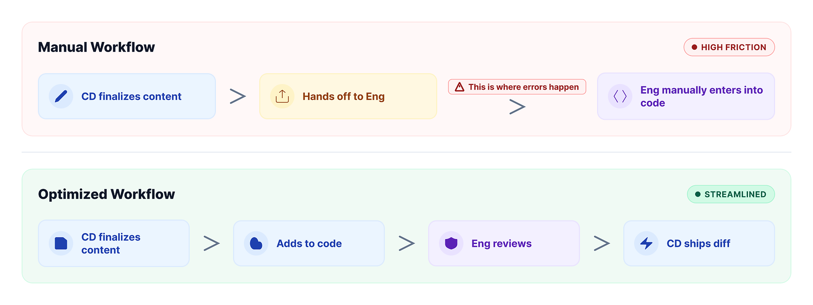

Meta · Browser / AI-assisted content implementation
Redesigning the content-to-code handoff with AI
Content Design finalized product strings, then handed them to Engineering for manual implementation. That series of handoffs added delay, transcription risk, and rework—especially for intricate, compliance-sensitive content.
I designed and piloted a human-in-the-loop workflow that let content designers add net-new strings directly to code while Engineering retained technical review and production safeguards.
Role, scope and partners
Senior Content Designer. Conceived and led the workflow from research and requirements through prototyping, testing, publication, and onboarding, in partnership with Content Design and Engineering.
Goal
Reduce the risk, delay, and duplicated work involved in moving net-new strings into code.
Outcome
Content Design gained greater implementation ownership while Engineering retained technical review and production controls.
Results
The challenge
Every handoff introduced delay and risk.
- Engineering repeatedly transferred finalized content from tasks, spreadsheets, or Figma into code.
- Content changes were buried inside larger code diffs, making review and correction slow.
- Content Design could not reliably validate strings, metadata, translations, or accessibility labels before publication.
- Subtle implementation errors in intricate, regulated content could have serious consequences.
Design thinking
Meta was encouraging teams to build stronger cross-functional skills and explore more AI-forward ways of working.
That made the content-to-code handoff an important place to look. The existing process depended on Engineering manually transferring finalized content into code, creating delays, duplicated work, and added risk for intricate, regulated strings.
A difficult handoff involving subtle, compliance-sensitive changes made the gap concrete.
The AI-assisted content workflows only beginning to emerge were primarily useful for editing strings already in code. My incubation work usually required adding entirely new strings, so those approaches did not apply. If I wanted to use an AI-forward workflow, I needed one designed specifically for net-new content.
I needed to determine whether Content Design would use it, Engineering could trust it, and the workflow could fit existing review and production constraints.
That led to a human-in-the-loop model: Content Design prepared and validated the implementation, Engineering approved the focused diff, and Content Design published only after approval.
What I did
-
01
Researched and validated the need
Mapped existing handoffs and failure points, and gathered input from Content Design, Engineering, and managers.
-
02
Defined the operating model
Documented the current and ideal workflows, ownership model, technical constraints, and production safeguards.
-
03
Built and piloted the skill
Developed prompt sequences and validation for net-new strings, encoding, metadata, accessibility, and source-of-truth accuracy.
-
04
Tested and refined the workflow
Piloted it on a real handoff and evaluated accuracy, turnaround, usability, and partner confidence.
-
05
Prepared it to scale
Published the finalized skill and built a safe interactive tutorial showing both the Content Design and Engineering experiences.
The solution
A comprehensive String Author skill prompt for adding and validating net-new product strings directly in code, supported by a human-in-the-loop workflow that preserved Engineering review.

Reflection
- Design optimized workflows to solve a real unmet need—and take advantage of AI where it adds meaningful value, not simply because greater AI usage is expected.
- Build trust and safeguards into the operating model so Content Design can own the process without making Engineering’s work harder.
- Validate the business need, team prioritization, and opportunity across every discipline to understand and address the right pain points.
“We saw a pretty big change in both our string accuracy and turnaround time, and I massively appreciate your leadership and impact in this space.”
— Engineering Manager